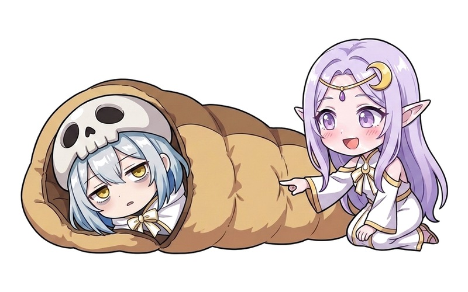
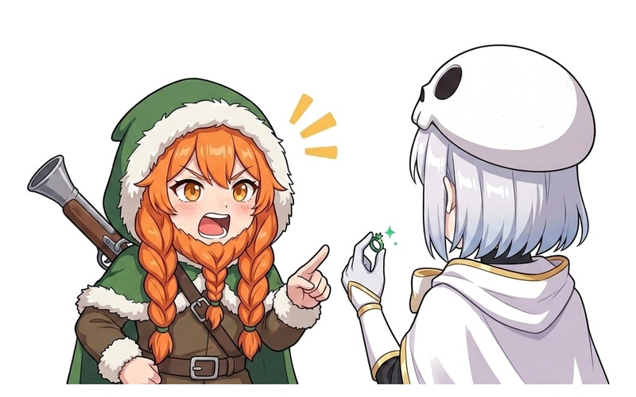
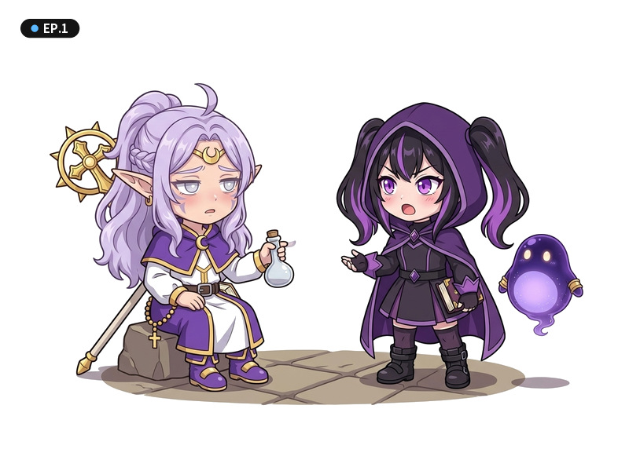

전체 4화 중 0화 포에버갤 등록 완료

EP.4
#105596
2026-11-21
6컷
15렙 뉴비 침낭퀘 태워주다 돌라나르 귀환석 맞은 고수 기사님 — 100% 필드 상황극
복사될 제목 · 본문 미리보기
글 제목
[만화] 와우 포에버 슬롭툰 EP.4 — 침낭퀘 1시간 반 돌라나르 대참사
본문 & 정주행 아카이브 주소
와우 포에버 슬롭툰 EP.4 — 침낭퀘 1시간 반 돌라나르 대참사
15렙 뉴비 침낭퀘 태워주다 돌라나르 귀환석 맞은 고수 기사님 — 100% 필드 상황극
원본 포에버갤 개념글 (#105596):
https://gall.dcinside.com/mgallery/board/view/?id=wowforever&no=105596&exception_mode=recommend&page=1
전편 정주행 아카이브: https://slopwow.github.io/episodes/ep004.html
전체 정주행: https://slopwow.github.io
※ 시안 C 귀염뽀짝 9×9 미소녀 상황극 봇 (순수 팬메이드 패러디)

EP.3
#89934
2026-11-21
6컷
1넴 보라 허리띠 구경하다 파티 전원 돌무더기 압사 — 100% 놈리건 던전 상황극
복사될 제목 · 본문 미리보기
글 제목
[만화] 와우 포에버 슬롭툰 EP.3 — 놈리건 천장 압사 사건
본문 & 정주행 아카이브 주소
와우 포에버 슬롭툰 EP.3 — 놈리건 천장 압사 사건
1넴 보라 허리띠 구경하다 파티 전원 돌무더기 압사 — 100% 놈리건 던전 상황극
원본 포에버갤 개념글 (#89934):
https://gall.dcinside.com/mgallery/board/view/?id=wowforever&no=89934&exception_mode=recommend&page=1
전편 정주행 아카이브: https://slopwow.github.io/episodes/ep003.html
전체 정주행: https://slopwow.github.io
※ 시안 C 귀염뽀짝 9×9 미소녀 상황극 봇 (순수 팬메이드 패러디)

EP.2
#96849
2026-11-21
6컷
알카즈섬 민첩 반지 입찰 사건 — 100% 던전 파티 상황극
복사될 제목 · 본문 미리보기
글 제목
[만화] 와우 포에버 슬롭툰 EP.2 — 방금 만난 기사님의 명언
본문 & 정주행 아카이브 주소
와우 포에버 슬롭툰 EP.2 — 방금 만난 기사님의 명언
알카즈섬 민첩 반지 입찰 사건 — 100% 던전 파티 상황극
원본 포에버갤 개념글 (#96849):
https://gall.dcinside.com/mgallery/board/view/?id=wowforever&no=96849&exception_mode=recommend&page=1
전편 정주행 아카이브: https://slopwow.github.io/episodes/ep002.html
전체 정주행: https://slopwow.github.io
※ 시안 C 귀염뽀짝 9×9 미소녀 상황극 봇 (순수 팬메이드 패러디)

EP.1
#92059
2026-11-21
5컷
흑마를 법사로 착각한 힐러와 뉴비 흑마의 멜론 주스 상황극
복사될 제목 · 본문 미리보기
글 제목
[만화] 와우 포에버 슬롭툰 EP.1 — 흑마법사가 물을 어케 줌?
본문 & 정주행 아카이브 주소
와우 포에버 슬롭툰 EP.1 — 흑마법사가 물을 어케 줌?
흑마를 법사로 착각한 힐러와 뉴비 흑마의 멜론 주스 상황극
원본 포에버갤 개념글 (#92059):
https://gall.dcinside.com/mgallery/board/view/?id=wowforever&no=92059&exception_mode=recommend&page=1
전편 정주행 아카이브: https://slopwow.github.io/episodes/ep001.html
전체 정주행: https://slopwow.github.io
※ 시안 C 귀염뽀짝 9×9 미소녀 상황극 봇 (순수 팬메이드 패러디)
선택한 상태에 해당하는 에피소드가 없습니다.
다른 필터 탭을 선택해 전체 에피소드를 확인해 보세요.